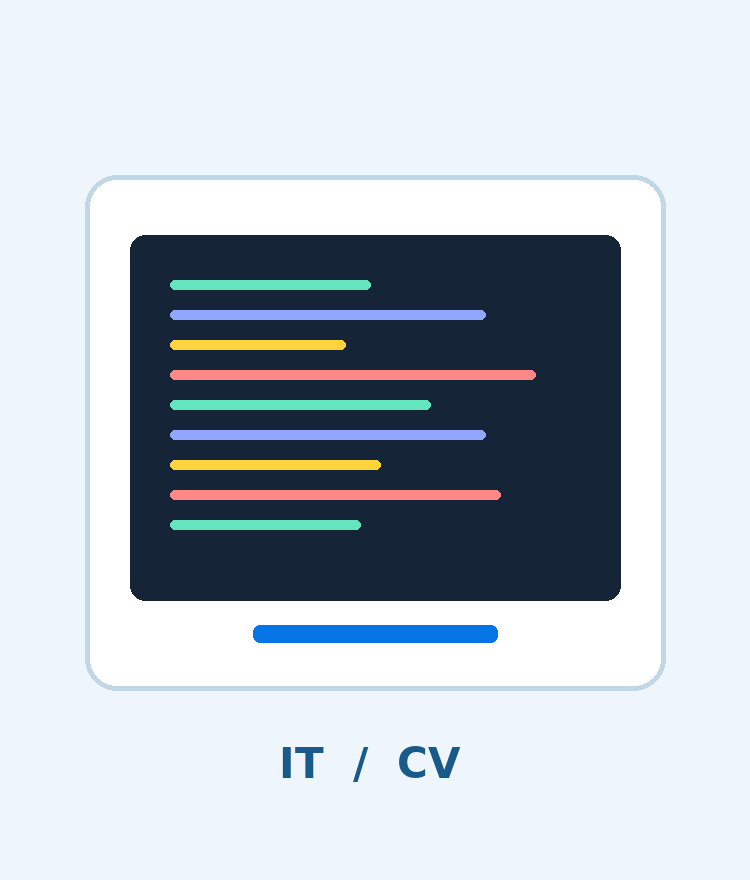
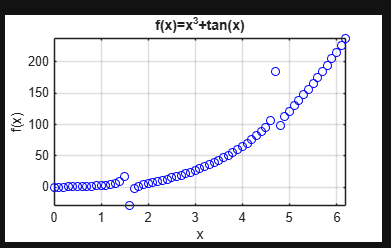
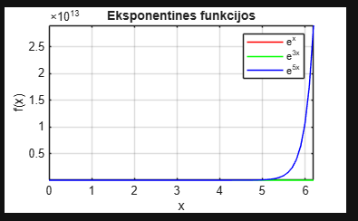
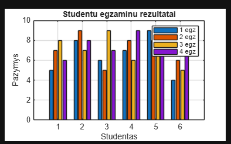
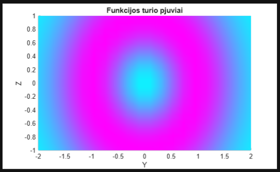
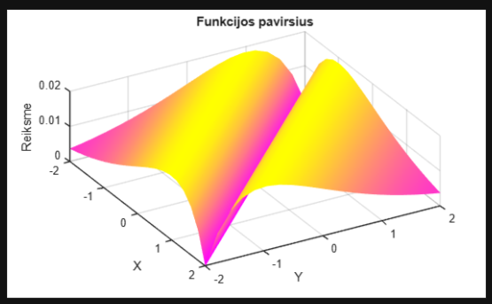
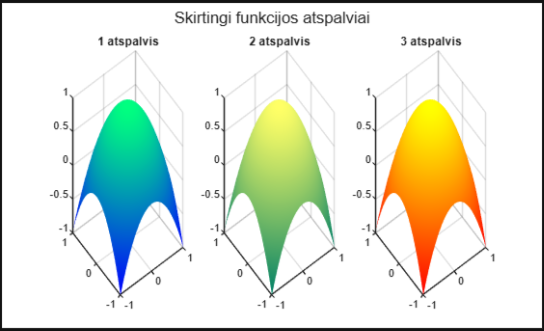

Danielius Kostin
Esu VILNIUS TECH studentas
Apie mane

Informacinių sistemų inžinerijos studentas
Esu Danielius Kostin, studijuoju informacinių sistemų inžineriją VILNIUS TECH (VGTU) universitete.
- Vardas: Danielius Kostin
- Universitetas: VILNIUS TECH
- Studijų programa: Informacinių sistemų inžinerija
- GitHub: danipython1
Mane domina programavimas, informacinių sistemų kūrimas ir technologijų taikymas praktiniams uždaviniams. Šis CV tinklalapis sukurtas atliekant skriptinio programavimo laboratorinį darbą.
Judantis apskritimas
Besisukantis trikampis
Studijų sritys
Temos, su kuriomis susipažįstu studijuodamas informacinių sistemų inžineriją.
Programavimo pagrindai
Algoritmai, programų struktūra ir problemų sprendimas.
Tinklalapių kūrimas
HTML, CSS ir JavaScript technologijų pažinimas.
Informacinės sistemos
Sistemų struktūra, duomenų apdorojimas ir jų taikymas.
Versijų valdymas
Darbas su Git ir GitHub mokomuosiuose projektuose.
Patirtis
Išsilavinimas ir mokymosi patirtis, susijusi su programavimu bei informacinėmis sistemomis.
Išsilavinimas
Informacinių sistemų inžinerija
Studijų metu
VILNIUS TECH (Vilniaus Gedimino technikos universitetas)
Studijuodamas gilinų žinias apie programavimą, informacines sistemas, duomenų apdorojimą ir skaitmeninių sprendimų kūrimą.
Savarankiškas interneto technologijų mokymasis
Studijų metu
HTML, CSS, JavaScript ir Git pagrindai
Mokausi kurti tvarkingus, adaptyvius tinklalapius ir valdyti projekto versijas naudojant GitHub.
Mokymosi patirtis
Skriptinio programavimo laboratoriniai darbai
2026
CV tinklalapio kūrimas ir publikavimas
Sukūriau ir pritaikiau asmeninį CV tinklalapį pagal „MyResume“ šabloną, atlikau HTML turinio atnaujinimą ir publikavimą per GitHub Pages.
MATLAB laboratoriniai darbai
2026
Grafikų braižymas ir duomenų vizualizacija
Atlikau funkcijų braižymo, 2D ir 3D grafikų, signalų filtravimo bei studentų rezultatų analizės užduotis MATLAB aplinkoje.
Atlikti darbai
MATLAB 3–4 laboratorinių darbų grafikai su trumpais paaiškinimais.

f(x) = x3 + tan(x)
3 laboratorinio darbo grafikas, kuriame pavaizduotas funkcijos kitimas ir taškų pasiskirstymas intervale.

Eksponentinės funkcijos
Šiame grafike lyginamos kelios eksponentinės funkcijos ir jų augimo sparta didėjant x reikšmėms.

Studentų egzaminų rezultatai
Stulpelinė diagrama leidžia patogiai palyginti šešių studentų rezultatus keturiuose egzaminuose.

Funkcijos tūrio pjūviai
4 laboratoriniame darbe sudarytas funkcijos tūrio pjūvių vaizdas, padedantis analizuoti reikšmes skirtingose koordinačių plokštumose.

Funkcijos paviršius
3D paviršiaus grafikas parodo funkcijos reikšmių kitimą dvimatėje x ir y koordinačių srityje.

Skirtingi funkcijos atspalviai
Grafikų palyginime naudojami keli atspalviai, kad būtų galima įvertinti vaizdavimo stiliaus įtaką duomenų suvokimui.
Kompetencijų pažanga
Informacinių sistemų inžinerijos įgūdžių pažangos lenta. Tai HTML ir CSS prototipas, o interaktyvumas numatytas 12 laboratoriniame darbe.
Bendras XP360 XP
Lygis4
RangasProfesionalas
Pažanga iki aukščiausio, 4 lygio (300 XP)100%
360 XP viršija aukščiausio pateikto lygio 300 XP slenkstį; kitas lygis užduotyje nenumatytas.
Įgūdžiai8
Atlikta3
Atlikta procentais37,5%
Planuojama 2
Duomenų bazės SQL
Mokomasi 3
JavaScript pagrindai
MATLAB duomenų analizė
Git versijų valdymas
Atlikta 3
HTML5 struktūra
CSS3 stilių kūrimas
GitHub Pages publikavimas
Paslaugos
Paslaugų pavyzdžiai, naudojami įgyvendinant CV tinklalapio ir programavimo užduotis.
Tinklalapių kūrimas
Asmeninių ir mokomųjų svetainių kūrimas, pritaikymas bei talpinimas GitHub Pages aplinkoje.
MATLAB grafikų rengimas
Grafikų braižymas, duomenų analizė ir rezultatų vizualizavimas laboratoriniams darbams.
Mokomųjų projektų pagalba
Pagalba tvarkant HTML struktūrą, kuriant sąrašus, lenteles ir integruojant medijos elementus.
Paslaugų lentelė
| Paslaugos pavadinimas | Aprašymas | Kaina |
|---|---|---|
| Tinklalapių programavimas | Asmeninių svetainių kūrimas ir pritaikymas pagal pateiktą šabloną. | 100 Eur |
| MATLAB grafikų paruošimas | Funkcijų, diagramų ir signalų grafikų braižymas laboratoriniams darbams. | 70 Eur |
| HTML turinio atnaujinimas | Tekstų, lentelių, sąrašų ir paveikslėlių integravimas į tinklalapį. | 50 Eur |
Naudojamos technologijos ir įrankiai
- HTML5 ir semantinės žymės
- CSS3 ir Bootstrap komponentai
- Adaptyvus išdėstymas
- Stilių pritaikymas lentelėms ir galerijoms
- JavaScript ir GitHub Pages
- MATLAB grafikų kūrimui
Pirmos paslaugos atlikimo etapai
- Reikalavimų analizė ir tinkamo šablono pasirinkimas.
- Turinio paruošimas: tekstai, paveikslėliai ir struktūros atnaujinimas.
- Publikavimas GitHub Pages aplinkoje ir galutinis veikimo patikrinimas.
Medijos įrašai
Žemiau pateikti medijos elementai įterpti naudojant <video>, <iframe> ir <audio> žymes.
Vietinis vaizdo įrašas
YouTube įrašas
Garso įrašas
Kontaktai
Vieša informacija apie mano studijų projektus ir GitHub profilį.
GitHub
Asmeninis telefono numeris, el. pašto adresas ir kiti privatūs kontaktai viešame CV nenurodomi.